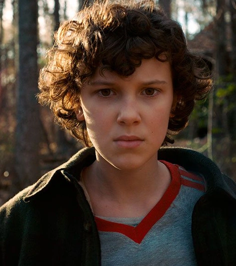
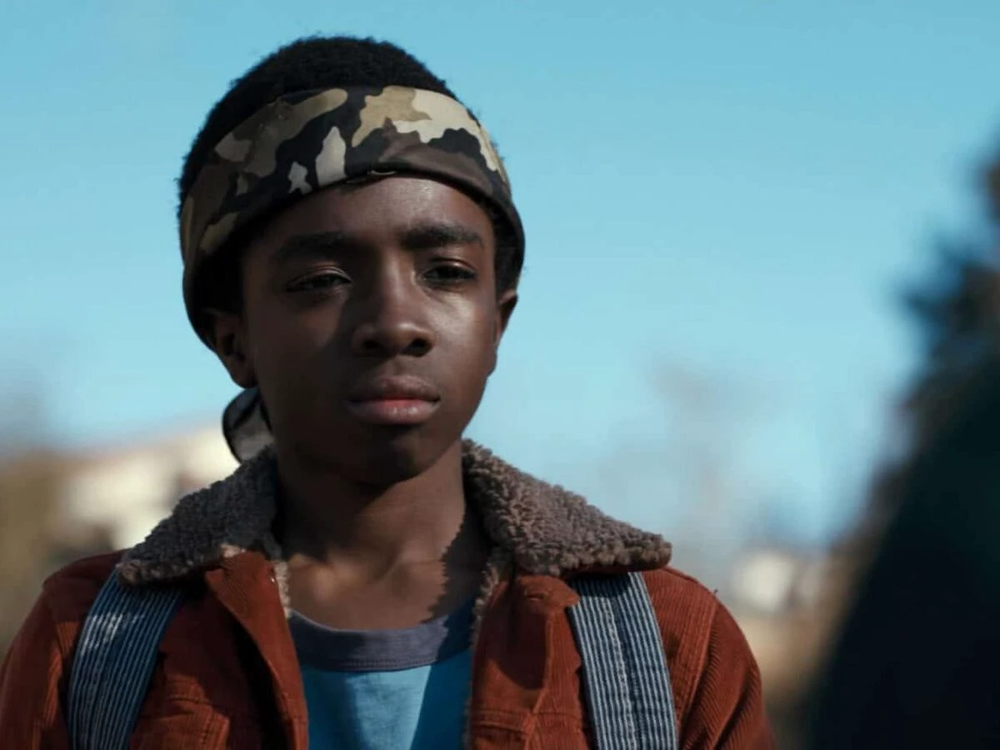
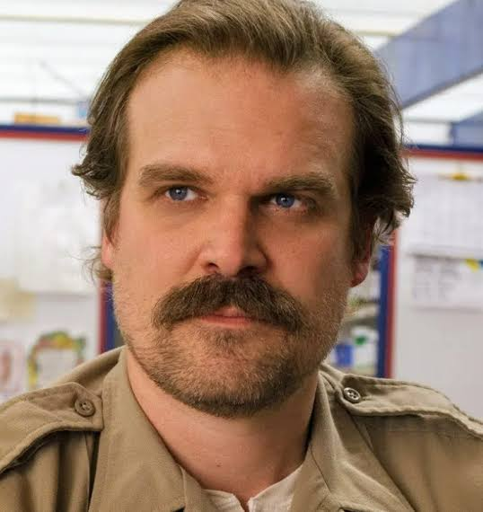
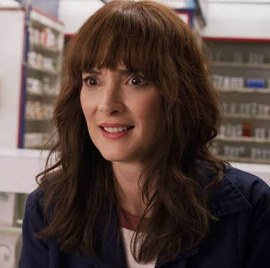
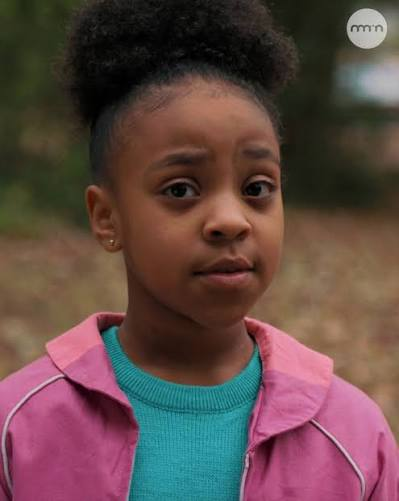
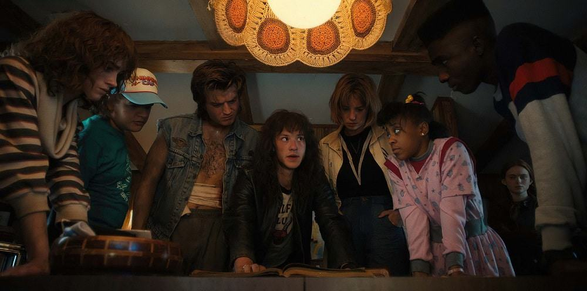
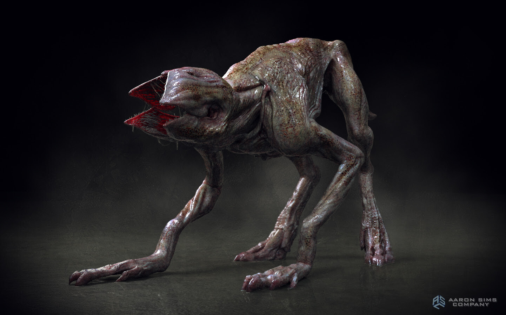
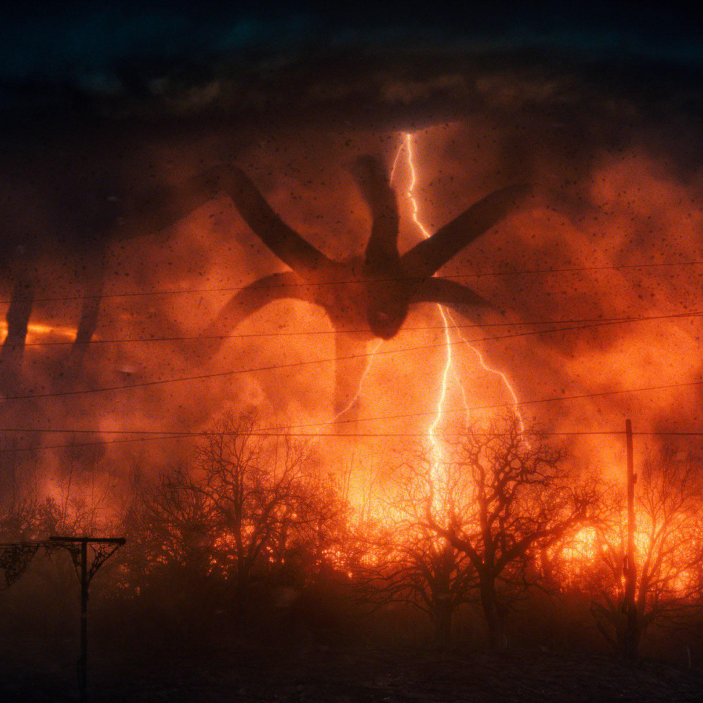
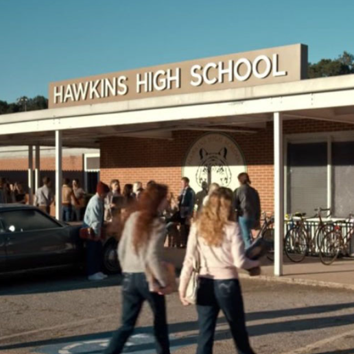
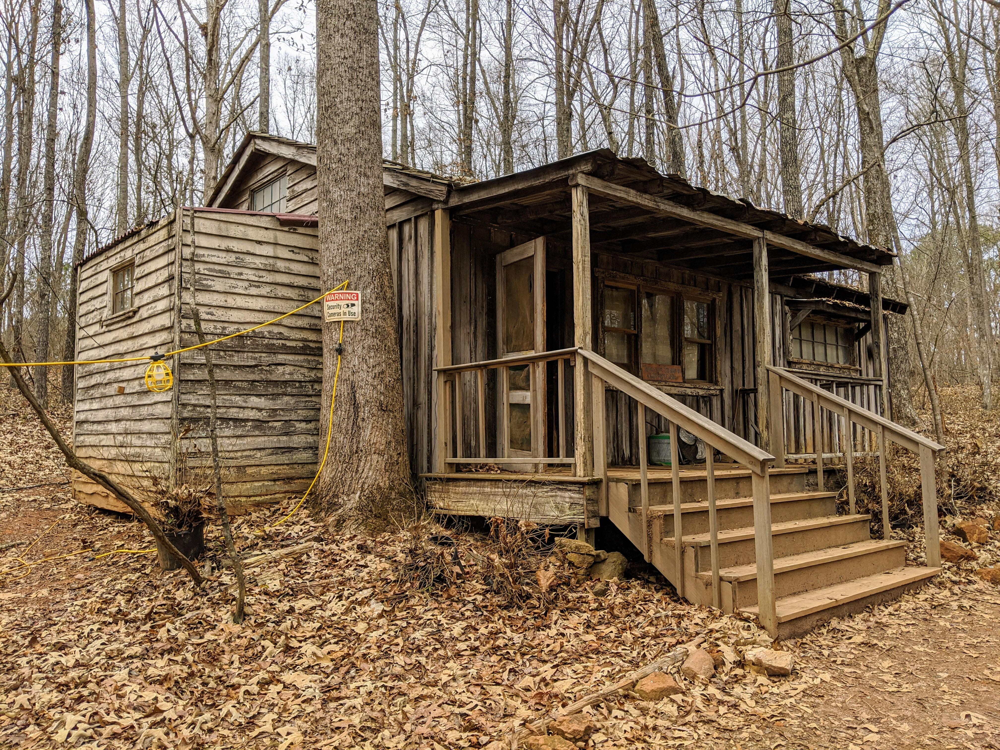

Prepare-se para entrar em um universo cheio de mistérios,
aventuras, amizades e acontecimentos sobrenaturais.
Em Hawkins, Indiana, nada é exatamente o que parece.
Por trás de uma cidade aparentemente tranquila existe
uma dimensão assustadora conhecida como Mundo Invertido.
Explore o universo da série
Conheça os personagens, descubra as criaturas,
relembre momentos marcantes e investigue os segredos
escondidos em Hawkins.
Conheça os personagens principais.
Explore as cinco temporadas.
Descubra as criaturas do outro lado.
Relembre os acontecimentos mais importantes.
Teste seus conhecimentos sobre a série.
Este é um projeto de fã desenvolvido para reunir
informações sobre Stranger Things e praticar HTML.
Sobre Stranger Things
Stranger Things é uma série de televisão que mistura
ficção científica, suspense, terror, aventura e drama.
A história começa quando Will Byers desaparece
misteriosamente na cidade de Hawkins.
Enquanto seus amigos tentam encontrá-lo, eles conhecem
uma garota misteriosa chamada Eleven, que possui
habilidades sobrenaturais.
Aos poucos, os personagens descobrem experimentos
secretos, criaturas perigosas e uma dimensão paralela.
Ficha técnica
Nome original
Stranger Things.
Criadores
Matt Duffer e Ross Duffer.
Gêneros
Ficção científica, suspense, aventura, drama e terror.
Ambientação
Década de 1980.
Cidade principal
Hawkins, Indiana, uma cidade fictícia.
Idioma original
Inglês.
Distribuição
Netflix.
Temas presentes na série
Amizade.
Família.
Coragem.
Amor.
Perdas.
Superação.
Experimentos científicos.
Universos paralelos.
Personagens principais
Conheça os personagens que fazem parte da história
e enfrentam os mistérios de Hawkins.
Eleven

Eleven é uma garota que possui habilidades
sobrenaturais, incluindo telecinese.
Ela foi criada em um ambiente de experimentos
científicos e desenvolveu uma forte ligação
com seus amigos.
Características
Possui poderes especiais.
É amiga de Mike, Dustin, Lucas e Will.
Foi encontrada pelos garotos na floresta.
Tem uma ligação importante com o laboratório.
Mike Wheeler
Mike é um dos melhores amigos de Will e uma
das primeiras pessoas a acolher Eleven.
É conhecido por sua lealdade, coragem e
determinação em proteger quem ama.
Características
Amigo de infância de Will.
Tem uma ligação especial com Eleven.
Participa das investigações do grupo.
Valoriza muito a amizade.
Will Byers
Will é o garoto cujo desaparecimento dá início
aos acontecimentos da primeira temporada.
Sua conexão com o Mundo Invertido influencia
diversos acontecimentos da história.
Características
É irmão de Jonathan.
Filho de Joyce Byers.
É amigo de Mike, Dustin e Lucas.
Possui uma ligação misteriosa com o outro lado.
Dustin Henderson
Dustin é inteligente, curioso e possui
um grande senso de humor.
Seu conhecimento científico ajuda o grupo
a compreender diversas situações.
Características
É muito inteligente.
Gosta de ciência e tecnologia.
É amigo de Steve Harrington.
Participa de diversas aventuras.
Lucas Sinclair

Lucas é um personagem corajoso, inteligente
e muito protetor com seus amigos.
Características
Faz parte do grupo original.
É irmão de Erica Sinclair.
Possui grande habilidade estratégica.
É determinado em suas decisões.
Max Mayfield
Max é uma garota independente, determinada
e apaixonada por música e videogames.
Características
Gosta de andar de skate.
É amiga do grupo de Hawkins.
Tem uma personalidade forte.
Possui momentos importantes na história.
Steve Harrington
Steve passa por uma grande transformação
ao longo da série.
De um jovem popular, ele se torna uma pessoa
muito protetora e importante para o grupo.
Características
É amigo de Dustin.
Trabalha na sorveteria Scoops Ahoy.
É conhecido por sua coragem.
Ajuda a proteger os mais jovens.
Robin Buckley
Robin é inteligente, observadora e possui
uma personalidade muito divertida.
Características
Trabalha com Steve na sorveteria.
É muito inteligente.
Ajuda nas investigações.
É amiga de Steve e Dustin.
Jim Hopper

Hopper é o chefe de polícia de Hawkins
e uma das figuras adultas mais importantes
da história.
Características
É chefe de polícia.
Desenvolve uma relação paternal com Eleven.
Investiga acontecimentos misteriosos.
É conhecido por sua coragem.
Joyce Byers

Joyce é a mãe de Will e Jonathan.
Sua determinação é fundamental para
descobrir o que aconteceu com seu filho.
Características
É muito protetora com seus filhos.
Não desiste facilmente.
Tem uma forte ligação com Hopper.
Participa de momentos decisivos.
Jonathan Byers
Jonathan é o irmão mais velho de Will
e filho de Joyce.
Características
É protetor com sua família.
Gosta de fotografia.
É uma pessoa reservada.
Ajuda nas investigações.
Erica Sinclair

Erica é esperta, confiante e possui
uma personalidade marcante.
Características
É irmã de Lucas.
Gosta de desafios.
É muito inteligente.
Participa de acontecimentos importantes.
Relacionamentos e amizades
As relações entre os personagens são uma parte
essencial da história de Stranger Things.
Eleven e Mike
A relação entre Eleven e Mike começa quando
os amigos encontram a garota na floresta.
Steve e Dustin
Steve e Dustin desenvolvem uma amizade
divertida e importante ao longo da série.
Joyce e Hopper
Joyce e Hopper compartilham momentos
de investigação, preocupação e coragem.
Max e Lucas
Max e Lucas desenvolvem uma relação
marcada por amizade, carinho e desafios.
O grupo de Hawkins
Mike, Will, Dustin e Lucas representam
a amizade que dá início à história.
Temporadas
A série apresenta diferentes fases da história
e acompanha o crescimento dos personagens.
1ª Temporada
A história começa com o desaparecimento
de Will Byers em Hawkins.
Seus amigos encontram Eleven e descobrem
que existe algo muito estranho acontecendo
na cidade.
Momentos importantes
Desaparecimento de Will.
Encontro com Eleven.
Investigação de Joyce.
Descoberta do Mundo Invertido.
Ameaça do Demogorgon.
2ª Temporada
Os acontecimentos continuam após os eventos
da primeira temporada.
Will enfrenta consequências de sua experiência
no Mundo Invertido, enquanto uma nova ameaça
começa a surgir.
Momentos importantes
Chegada de Max.
Aparição dos Demodogs.
Desenvolvimento dos poderes de Eleven.
Ameaça do Devorador de Mentes.
Novas descobertas sobre Hawkins.
3ª Temporada
O verão chega a Hawkins e o shopping
Starcourt se torna um dos principais cenários.
Enquanto os personagens aproveitam as férias,
uma nova ameaça coloca a cidade em perigo.
Momentos importantes
Inauguração do shopping Starcourt.
Trabalho de Steve e Robin.
Novas experiências de Eleven.
Retorno de uma ameaça sobrenatural.
Confronto no shopping.
4ª Temporada

Uma nova ameaça surge e acontecimentos
assustadores começam a atingir Hawkins.
Os personagens enfrentam desafios em diferentes
lugares enquanto tentam compreender os planos
de Vecna.
Momentos importantes
Apresentação de Vecna.
História de Victor Creel.
Retorno de Eleven aos experimentos.
Importância da música para Max.
Revelações sobre o passado.
5ª Temporada
A quinta temporada representa a etapa final
da história de Stranger Things.
Hawkins enfrenta as consequências dos
acontecimentos anteriores, enquanto os
personagens se preparam para o confronto final.
Elementos da temporada
O destino de Hawkins.
O confronto com Vecna.
O papel de Eleven.
A união dos personagens.
O futuro do Mundo Invertido.
Episódios marcantes
Alguns episódios ficaram conhecidos por seus
acontecimentos importantes e cenas memoráveis.
O desaparecimento de Will Byers
O desaparecimento de Will dá início à jornada
de investigação dos personagens.
O mundo invertido
Os personagens começam a compreender
a existência de uma dimensão paralela.
A batalha de Starcourt
O shopping se transforma no cenário
de um confronto importante.
Dear Billy
Um episódio marcado pela luta de Max
contra a influência de Vecna.
Criaturas e ameaças
O Mundo Invertido abriga criaturas perigosas
que representam uma ameaça para Hawkins.
Demogorgon
O Demogorgon é uma criatura assustadora
que aparece na primeira temporada.
Sua aparência e comportamento fazem dele
uma das criaturas mais conhecidas da série.
Demodogs

Os Demodogs são criaturas que apresentam
características semelhantes às do Demogorgon.
Devorador de Mentes

O Devorador de Mentes é uma entidade
poderosa associada ao Mundo Invertido.
Vecna
Vecna é uma das principais ameaças
enfrentadas pelos personagens.
Sua história está relacionada aos
experimentos e aos acontecimentos
sobrenaturais de Hawkins.
Demobats
Os Demobats são criaturas voadoras
encontradas no Mundo Invertido.
Laboratório de Hawkins
O Laboratório Nacional de Hawkins é um dos
locais mais importantes da história.
O local está relacionado a experimentos secretos
e pesquisas envolvendo habilidades sobrenaturais.
Principais elementos
Experimentos científicos.
Pesquisas sobre Eleven.
Portais dimensionais.
Instalações secretas.
Investigações governamentais.
O Mundo Invertido
O Mundo Invertido é uma dimensão misteriosa
conectada à cidade de Hawkins.
Esse lugar apresenta uma aparência sombria,
com estruturas semelhantes às do mundo real,
mas cobertas por elementos orgânicos e assustadores.
Características do outro lado
Ambiente escuro.
Presença de partículas no ar.
Vegetação e estruturas diferentes.
Presença de criaturas perigosas.
Conexões com Hawkins.
Por que ele é importante?
O Mundo Invertido está diretamente relacionado
aos principais mistérios da série e aos
acontecimentos que ameaçam Hawkins.
Lugares importantes de Hawkins
Casa dos Byers
A casa da família Byers é um dos cenários
mais importantes da primeira temporada.
Shopping Starcourt
O shopping Starcourt é um dos principais
cenários da terceira temporada.
Escola de Hawkins

A escola faz parte da rotina dos jovens
personagens da série.
Fliperama
O fliperama é um lugar associado aos
videogames e à cultura dos anos 1980.
Cabana de Hopper

A cabana é um local importante para
Hopper e Eleven.
Centro de Hawkins
A região central da cidade reúne diferentes
estabelecimentos e cenários da história.
Linha do tempo de Hawkins
Confira alguns dos principais acontecimentos
apresentados ao longo da série.
1983:
Desaparecimento de Will Byers e descoberta
de Eleven.